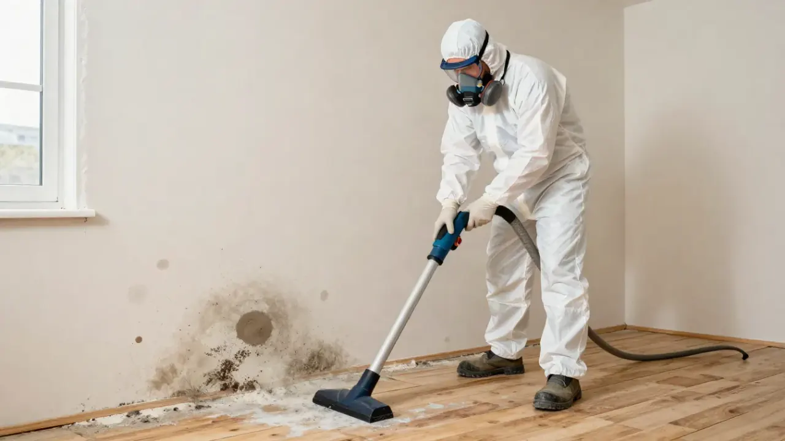
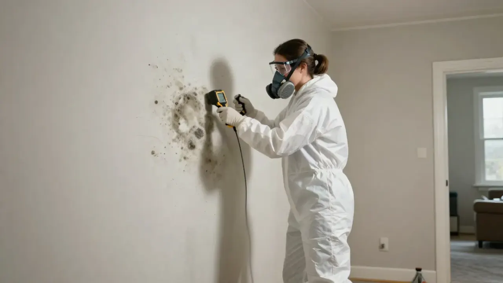
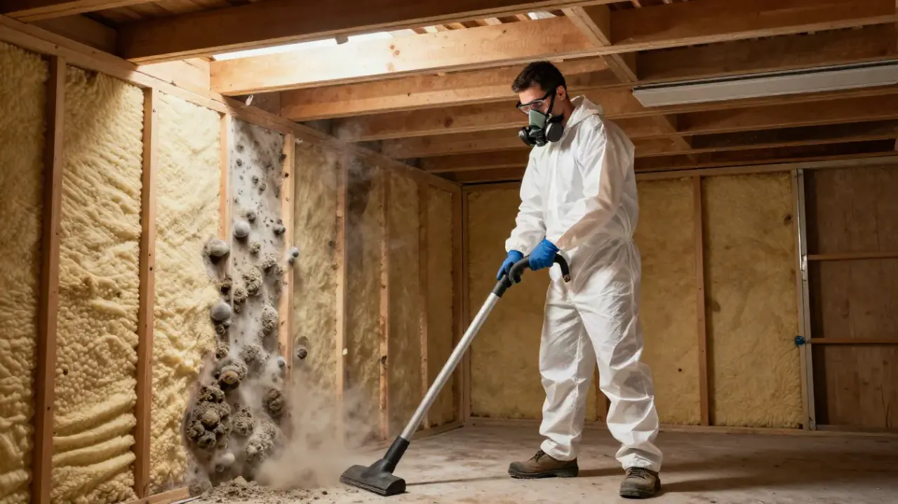
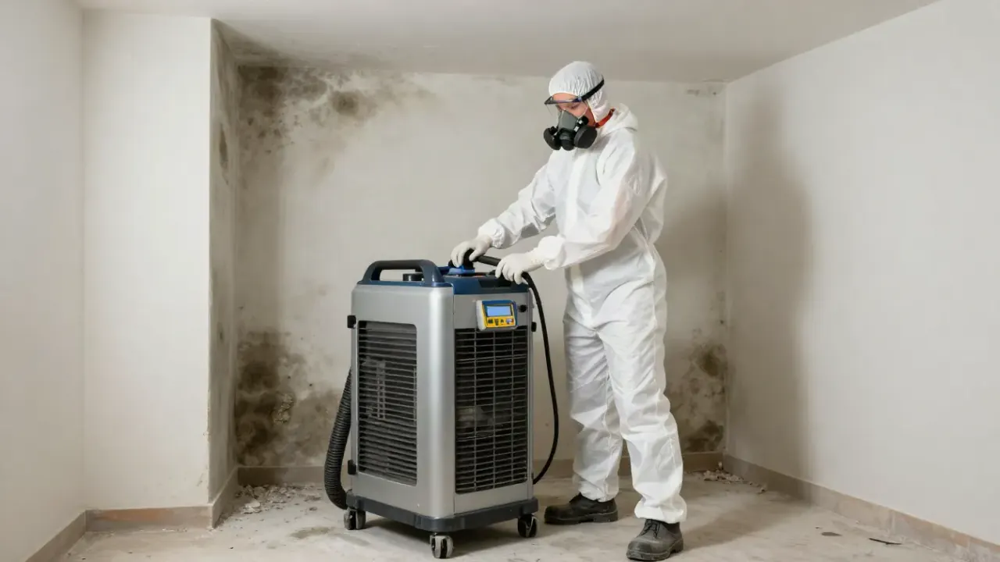

Crawl Space Mold Remediation in Evansville, Indiana
A musty smell inside your home may come from a place you rarely see: the crawl space beneath your floors. Damp wood, wet insulation, condensation, and poor moisture control can create conditions that allow mold to grow below your home.
Evansville Mold Pros connects property owners with independent mold remediation contractors who can assess crawl space mold concerns and provide written quotes for recommended work.
Whether you have noticed an earthy odor indoors, visible growth on wooden supports, or moisture beneath your home, identifying the source is an important step toward addressing the problem.
Need help with crawl space mold? Call (930) 758 0114 or submit the contact form to request a connection with an independent contractor.
Warning signs
Signs of Mold in Your Crawl Space
Crawl spaces are often dark, enclosed, and difficult to inspect. Mold may develop on wooden framing, insulation, or other materials without being immediately visible from inside the home.
Watch for these possible warning signs.
A persistent musty odor: An earthy smell in rooms above the crawl space may indicate moisture or mold below the floor. The odor alone does not confirm mold, but it is worth investigating if it keeps returning.
Discoloration on wooden framing: Floor joists, support beams, subflooring, and other wood surfaces may develop patches of discoloration when damp conditions persist. A visual assessment can help determine whether the marks are mold, staining, or another issue.
Damp or damaged insulation: Insulation that is wet, compressed, sagging, or falling away from the floor may indicate a moisture problem. Damaged insulation may need attention even if mold is not visible.
Standing water or wet soil: Water beneath the home can raise humidity and keep nearby materials damp. The source may involve drainage, plumbing, groundwater, or water entering through crawl space openings.
Condensation on pipes and surfaces: Moisture collecting on cool pipes or other surfaces can contribute to persistent dampness.
Soft or deteriorating wood: Wood that appears damaged or feels unusually soft may require further evaluation. Moisture can contribute to several types of wood damage, so do not assume every damaged area is caused by mold.
If you notice these signs, avoid disturbing the affected materials before the area has been assessed.

Common causes
What Causes Crawl Space Mold?
Mold growth depends on moisture. In a crawl space, moisture can build up for several reasons, and more than one issue may be present at the same time.
Ground moisture
Bare soil can release moisture into the air beneath a home. When moisture is not adequately controlled, humidity may remain high enough to affect wooden framing and other materials.
Water entering from outside
Rainwater can enter through crawl space vents, gaps, openings, or other vulnerable areas. Poor drainage around the property may also allow water to collect beneath the home.
Plumbing leaks
Leaking supply pipes, drain lines, and other plumbing components can keep soil, insulation, and wood damp. Some leaks remain hidden until an odor or visible change appears.
Condensation and high humidity
Warm, humid air can come into contact with cooler surfaces beneath the home. This can create condensation on pipes, framing, and other materials, particularly when moisture levels remain high.
Wet or poorly installed insulation
Insulation that becomes wet may hold moisture against nearby surfaces. The cause of the wetness needs to be identified before damaged materials are replaced.
Inadequate moisture control
A crawl space may need improvements to drainage, ground moisture control, ventilation, or other building conditions. The right approach depends on the home's construction and the source of the moisture.
Simply cleaning visible mold will not resolve an ongoing moisture problem. The conditions allowing the growth to develop also need attention.
How it works
What Does Crawl Space Mold Remediation Involve?
The recommended work depends on the size of the affected area, the condition of the materials, and the cause of the moisture. An independent contractor can assess the situation and explain which steps may be necessary.
Inspecting the crawl space
The contractor may examine accessible wooden framing, subflooring, insulation, pipes, and other materials for visible growth or moisture damage. The assessment may also consider water entry points and areas where condensation or dampness is present.
Access and safety conditions can affect how the space is assessed.
Identifying moisture sources
The contractor may look for signs of plumbing leaks, water intrusion, damp soil, condensation, or drainage problems. Some issues may require a separate plumber or drainage professional.
Planning the work
The proposed scope should explain which areas are affected, which materials may need cleaning or removal, and whether containment measures are appropriate. Ask which moisture control measures are included and which repairs require a separate contractor.
Cleaning or removing affected materials
Depending on the findings, suitable surfaces may be cleaned, while damaged insulation or other porous materials may need removal. The correct method depends on the material and extent of the problem.
Drying and moisture control
Affected materials need appropriate drying, and the moisture source must be addressed. Depending on the property, this may involve correcting leaks, improving drainage, managing ground moisture, or making other building repairs.
Before approving the work, request a written quote that explains the proposed tasks, included materials, and any exclusions.
Costs and quotes
How Much Does Crawl Space Mold Remediation Cost?
Crawl space remediation costs vary from one property to another. The price depends on the affected area, access conditions, material damage, and the measures needed to control moisture.
Factors that may affect a quote include:
A quote for cleaning a limited area may differ substantially from a project involving damaged insulation, extensive wood surfaces, or ongoing water entry.
Ask the contractor to separate remediation work from additional repairs where possible. This helps you understand what the price covers and whether another specialist may be needed.
Evansville Mold Pros is a referral service and does not set independent contractors' prices.

Need a quick answer?Talk with us about your property.(930) 758-0114
How every request is handled.
Tell us what you foundGet connectedWritten quoteYou decide
DIY or professional?
Can You Clean Crawl Space Mold Yourself?
Crawl space cleanup can be more difficult than cleaning a small, visible patch inside a living area. Limited access, low clearance, exposed insulation, electrical components, and potentially damaged structural materials can make the work challenging.
Do not enter a crawl space if it has standing water, unsafe access, exposed electrical hazards, or conditions you cannot assess safely.
For a limited area on a suitable hard surface, cleaning may sometimes be possible. However, extensive growth, contaminated insulation, widespread moisture, or mold on multiple structural surfaces may require professional assessment.
Avoid dry brushing or aggressively disturbing affected materials, as this can spread particles into the air. Do not paint over mold or rely on surface cleaning while moisture continues to enter the space.
People with asthma, mold allergies, weakened immune systems, or other relevant health concerns should take extra care around mold.
The US Environmental Protection Agency provides general guidance in its Brief Guide to Mold, Moisture and Your Home.

Prevention
How to Help Prevent Crawl Space Mold
Once the affected materials have been addressed, moisture control can help reduce the chance of recurring mold growth.
Correct water entry. Check for leaks and places where rainwater may enter beneath the home. Repairs should match the actual source of the moisture.
Improve drainage where needed. Keep gutters clear and direct downspouts away from the foundation where practical. Persistent water accumulation may require additional drainage work.
Manage ground moisture. Depending on the crawl space design, a suitable ground vapor barrier or other moisture control measures may help reduce moisture entering from the soil. Installation requirements vary by property.
Control humidity. A crawl space may need a suitable humidity management approach. Ventilation alone is not always enough, particularly when outdoor air is warm and humid.
Inspect plumbing. Check accessible pipes and connections for leaks, and address problems promptly.
Check insulation and framing. Look for damp insulation, water stains, and recurring odors. Investigating early warning signs may help limit further damage.
A contractor can explain which measures suit your crawl space rather than recommending the same solution for every home.

Service areas
Crawl Space Mold Remediation in Evansville and Nearby Areas
Homes in Evansville and surrounding parts of southwestern Indiana can experience crawl space moisture from rainwater, plumbing leaks, damp soil, and humid conditions. The cause depends on the property, its construction, and how water moves around and beneath the home.
A recurring musty odor, damp insulation, or visible growth on floor framing deserves attention because the affected area may not be easy to see from inside the house.
Evansville Mold Pros helps connect property owners with independent contractors for crawl space mold assessments and written quotes. Connections in nearby communities such as Newburgh, Boonville, and Mount Vernon depend on participating contractor coverage.

Where we work
Evansville and nearby communities.
A musty odor inside the home may be associated with moisture or mold in the crawl space. However, an odor alone cannot establish the source. An assessment may help identify where the smell is coming from.
Yes. Wooden floor joists and subflooring can support mold growth when moisture conditions allow it. The extent of the growth and the condition of the wood should be assessed before deciding what work is necessary.
Not always. The decision depends on the type and condition of the insulation, the extent of moisture damage, and whether it can be cleaned or dried appropriately. The contractor should explain why removal or replacement is recommended.
The timeline depends on the size of the affected area, access conditions, material removal, drying, and any repairs needed to control moisture. The independent contractor can provide an estimate after assessing the property.
Mold can return if the crawl space remains damp or develops another moisture problem. Addressing the source of moisture and maintaining suitable conditions are important parts of reducing the risk of recurrence.
Call (930) 758 0114 or submit the contact form on this page. Evansville Mold Pros can connect you with an independent contractor who can discuss availability, assess the situation as needed, and provide a quote for proposed work.
Keep exploring
Related Services
From the blog
Guides Related to Crawl Space Mold Remediation
Mold Guides
How to Get Rid of Mold in a Crawl Space
Learn what causes crawl space mold, how to address moisture, when affected materials need attention, and how to prevent recurring growth.
Read the guide
Mold Guides
7 Signs of Hidden Mold in Your Home
Learn the warning signs of hidden mold, including musty odors, water stains, damp materials, and recurring moisture problems.
Read the guideMold Guides
How Much Does Mold Remediation Cost?
Learn what affects mold remediation costs, including affected materials, moisture problems, cleanup, and repairs before requesting a contractor quote.
Read the guideYour next step is waiting
Request a Crawl Space Mold Remediation Quote
If you have noticed a musty smell, damp insulation, or possible mold beneath your home, finding the source of moisture can help you understand the next steps.
Call (930) 758 0114 or submit the contact form to request a connection with an independent mold remediation contractor serving Evansville, Indiana.
Evansville Mold Pros is a referral service. Independent contractors determine their own availability, qualifications, recommendations, pricing, and scope of work.
Start with the basics
Contact Evansville Mold Pros
Evansville Mold Pros is a referral service. Independent contractors perform the assessment and remediation work, set their own prices, and confirm timing and job details directly with you.